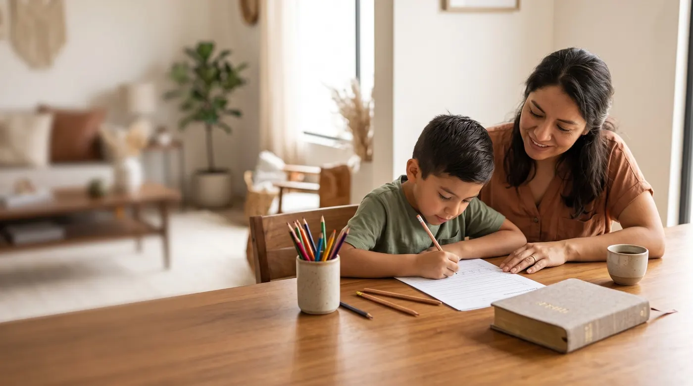
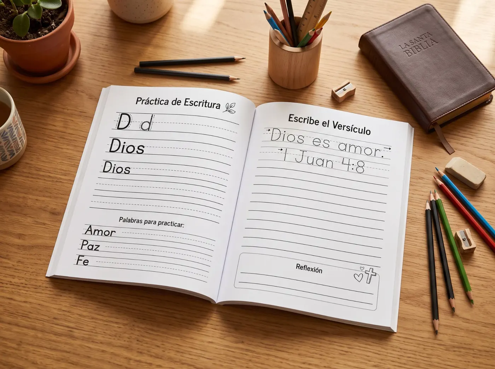
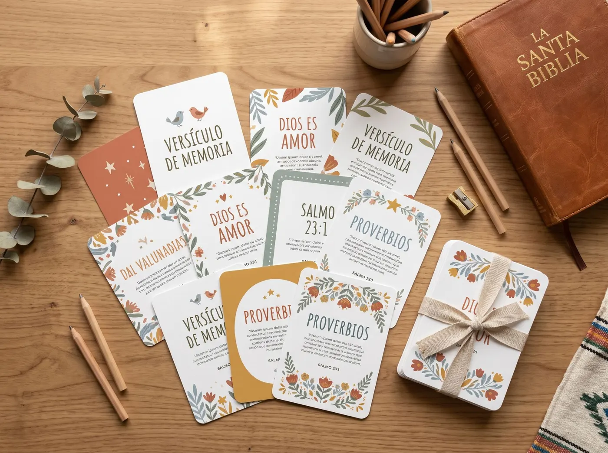

Caligrafia bíblica · Crianças de 6 a 10 anos
Ajude seu filho a melhorar a letra enquanto aprende a Palavra de Deus.
Um programa de 12 semanas que une caligrafia, escrita bíblica, memorização e reflexão em uma atividade simples de apenas 15 minutos por dia.

Aqui entra o seu vídeo de vendas (VSL)Pagamento único de R$ 47 · Acesso digital imediato
- PDF para imprimir
- 15 min por dia
- 12 semanas
- Sem telas
O desafio
Seu filho precisa treinar a letra. Você quer que esse tempo valha a pena.
A letra melhora com prática constante: traçar, copiar e escrever de novo. Mas as folhas de cópia repetitivas cansam rápido, e muitas crianças acabam largando no meio.
Ao mesmo tempo, encontrar atividades sem telas que sejam fáceis de preparar, tenham um propósito e transmitam valores nem sempre é simples, ainda mais com a correria do dia a dia.
- Cópias sem sentido que seu filho não quer terminar
- Tempo demais no celular ou no tablet
- Pouco tempo para procurar e preparar atividades
- Vontade de compartilhar valores em família sem saber por onde começar
Escreva a Palavra une as duas coisas: prática de escrita com propósito, numa rotina curta que cabe em qualquer dia.
Como funciona
Um método simples: 5 passos, 15 minutos por dia
A cada semana seu filho avança um pouco, do traçado guiado à escrita independente.
-
LEIA
Lê o versículo do dia em voz alta, sozinho ou com você.
-
TRACE
Cobre letras e palavras sobre linhas pontilhadas.
-
COPIE
Copia o versículo com o modelo à vista.
-
ESCREVA
Escreve sozinho, com a própria letra.
-
LEMBRE
Memoriza e reflete com uma pergunta simples.
Por dentro
Veja como é por dentro
Folhas claras, com bastante espaço e linhas de apoio pensadas para mãos pequenas.

Trace as letras
Copie o versículo
O Senhor é o meu pastor; nada me faltará.
Para pensar
Como Deus cuida de você hoje?
Imagens ilustrativas. O design final das páginas pode variar.
Conteúdo
Tudo o que vem no programa
-
Programa de 12 semanas
Uma sequência organizada para avançar semana a semana.
-
Exercícios de caligrafia
Prática de letras e palavras com linhas de apoio.
-
Traçado
Letras e palavras pontilhadas para cobrir com calma.
-
Cópia guiada
O versículo com modelo para copiar logo abaixo.
-
Escrita independente
Espaço para escrever sem apoio e ver a evolução.
-
Versículos dos Salmos
Textos curtos, adequados para crianças.
-
Memorização
Atividades para guardar os versículos no coração.
-
Reflexão
Perguntas simples para conversar em família.
-
PDF para imprimir
Imprima em casa ou na papelaria, quando precisar.
Bônus inclusos
E ainda leva 5 bônus

-
Bônus 1
52 cartões de versículos
Para recortar, memorizar e revisar o ano todo.
-
Bônus 2
Caderno de oração infantil
Páginas para seu filho escrever e desenhar as orações dele.
-
Bônus 3
Folhas extras de caligrafia
Mais prática para quando ele quiser continuar escrevendo.
-
Bônus 4
Calendário de 12 semanas
Para marcar cada dia concluído e ver a evolução.
-
Bônus 5
Certificado de conclusão
Para celebrar o esforço ao terminar o programa.
Para quem é?
Pensado para quem acompanha as crianças
-
Mães e pais
Que buscam uma atividade com propósito e sem telas.
-
Educação domiciliar
Como parte da rotina de português e escrita.
-
Professoras e professores
Como apoio para treinar a escrita com valores.
-
Escola Bíblica Dominical
Para fixar os versículos com uma atividade prática.
-
Crianças de 6 a 10 anos
Que estão firmando a letra e gostam de aprender.
É um material de prática para casa. Não substitui o ensino escolar nem é um programa oficial de alfabetização.
Oferta de lançamento
Comece hoje com Escreva a Palavra
Preço de lançamento
Escreva a Palavra — Salmos
- Programa completo de 12 semanas
- Traçado, cópia guiada e escrita independente
- Versículos, memorização e reflexão
- 52 cartões de versículos
- Caderno de oração infantil
- Folhas extras de caligrafia
- Calendário de 12 semanas
- Certificado de conclusão
R$ 47
Pagamento único · Sem mensalidade · Acesso digital imediato
O pagamento é processado em uma plataforma de pagamento segura.
Produto digital (PDF). Nada é enviado pelo correio.
Perguntas frequentes
Tire suas dúvidas
Para qual idade é?
Foi pensado para crianças de 6 a 10 anos. As menores podem precisar de mais ajuda no traçado; as maiores conseguem avançar com mais independência.
É um livro físico?
Não. É um produto digital em PDF. Nada é enviado pelo correio: você baixa e imprime.
Como eu imprimo?
Você pode imprimir em casa, em qualquer impressora, ou levar o arquivo a uma papelaria. Também dá para imprimir só as folhas da semana.
Quanto tempo leva por dia?
Cerca de 15 minutos. Você pode ajustar ao ritmo do seu filho: o importante é a constância, não a velocidade.
Posso usar com mais de um filho?
Sim. Você pode imprimir as folhas para as crianças da sua família. Para usar com turmas ou grupos, confira os termos de uso.
Como e quando eu recebo?
O acesso é imediato após a confirmação do pagamento: você recebe o link de download no e-mail cadastrado na compra. Se usar uma forma de pagamento que demora para compensar, o acesso chega assim que for confirmado.
Tem garantia?
Sim. Você tem 7 dias para pedir o reembolso se o material não for o que esperava, conforme os termos da plataforma de pagamento.
Preciso fazer parte de alguma igreja?
Não. É um material de escrita baseado em textos dos Salmos e pode ser usado por qualquer família ou educador interessado.
Alguns minutos hoje. Uma prática que pode acompanhá-lo por muito tempo.
Escreva a Palavra — Salmos · 12 semanas · PDF para imprimir · R$ 47 pagamento único
QUERO COMEÇAR AGORA